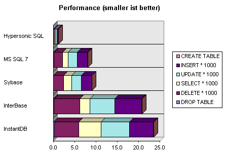
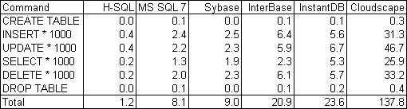

The performance of InterBase Server 5.0, Sybase SQL Anywhere, Microsoft SQL Server 7.0, InstandDB, Cloudscape and Hypersonic SQL was compared. It was assumed the databases that are not written in Java would be much faster because they are written in C, C++ or Assembler, and because Hypersonic SQL is until now not optimized for speed. But the contrary was true:
The current version of Hypersonic SQL is (using this simple tests) always faster than all the other databases. Sometimes more than 10 times!
The reasons for this are not fully clear. One reason may be that Hypersonic SQL does not organize the data in a traditional file oriented way.
The results indicate the time (in seconds) required for executing the commands. Smaller is better. There are currently no results for Microsoft Access, but the results are similar to InterBase and Sybase. The results for Cloudscape are not included in the graphic because this would disturb the picture.

Results as a table

All databases are run with enough memory (no swapping) on the same computer. The databases are:
The tests have been executed on a computer with Windows NT 4.0, a AMD 350 MHz processor, with 128 MB RAM. The test program is included in the DatabaseManager: Commands / Test Script. The JDK 1.3 has been used. When running the database inside a browser, Hypersonic SQL it is much slower, because the Java Virtual Machines in browsers are currently quite slow.
The following statements are tested:
CREATE TABLE Test(
Id INTEGER PRIMARY KEY,
FirstName VARCHAR(20),
Name VARCHAR(50),
ZIP INTEGER)
INSERT INTO Test VALUES(#,'Julia','Peterson-Clancy',#)
UPDATE Test SET Name='Hans' WHERE Id=#
SELECT * FROM Test WHERE Id=#
DELETE FROM Test WHERE Id=#
DROP TABLE Test
where # is a loop from 0 to 1000